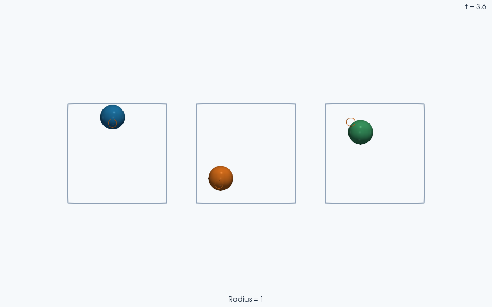

Note
Go to the end to download the full example code.
Drive vectorized environments with a custom policy#
Any JIT-compatible callable with signature
policy(obs, key, carry, **kwargs) -> (action, carry) can drive a JaxDEM RL
environment. This example writes a stateful proportional–derivative controller
(smoothing its command with an exponential moving average stored in carry)
and rolls out three vectorized
SingleNavigator copies
with VTK export.
For neural-network policies (Flax NNX), see Intro to JaxDEM reinforcement learning. Install
JaxDEM[rl,io].
import tempfile
from pathlib import Path
import jax
import jax.numpy as jnp
import numpy as np
import jaxdem as jdem
import jaxdem.rl as rl
from jaxdem import utils
Define a Stateful Custom Policy#
obs has shape (B, A, features) (retaining the agent axis A even
for single-agent environments). carry threads arbitrary persistent policy
state between decisions—here, the previous smoothed action:
def policy(obs, key, carry, alpha: float = 0.6):
del key
# SingleNavigator observes [unit(pos - goal), clamped(pos - goal), velocity].
dim = obs.shape[-1] // 3
direction_away = obs[..., :dim]
velocity = obs[..., 2 * dim :]
raw = -2.0 * direction_away - 0.5 * velocity
capped = raw / jnp.maximum(1.0, jnp.linalg.norm(raw, axis=-1, keepdims=True))
smoothed = alpha * capped + (1.0 - alpha) * carry
return smoothed, smoothed
Vectorize, Reset, and Roll Out#
vectorise_env() broadcasts one scalar
environment to num_envs copies; distinct PRNG keys randomize each copy.
env_trajectory_rollout() keeps the entire
rollout inside JAX and stacks snapshots along axis 0, yielding particle
positions of shape (T, B, N, dim). Notice that these helpers freeze any
episode once env.done(env) becomes True until you explicitly reset it:
num_envs = 3
n_frames = 24
save_every = 15
skip_frames = 4
total_decisions = n_frames * save_every
key = jax.random.key(1)
env = rl.Environment.create(
"single_navigator",
min_box_size=8.0,
max_box_size=8.0,
max_steps=total_decisions * (skip_frames + 1) + 1,
)
env = rl.vectorise_env(env, n=num_envs)
key, reset_key = jax.random.split(key)
env = env.reset(env, jax.random.split(reset_key, num_envs))
initial_dist = np.linalg.norm(
np.asarray(env.state.pos_c - env.env_params["objective"]), axis=-1
).ravel()
carry = jnp.zeros((num_envs, env.max_num_agents, env.action_space_size))
env, key, carry, env_traj = utils.env_trajectory_rollout(
env,
policy,
key,
carry,
n=n_frames,
stride=save_every,
skip_frames=skip_frames,
)
env.system.check_overflow()
final_dist = np.linalg.norm(
np.asarray(env.state.pos_c - env.env_params["objective"]), axis=-1
).ravel()
print("Trajectory pos shape (T, B, N, dim):", env_traj.state.pos.shape)
print("Initial -> final distances:", np.round(initial_dist, 3), "->", np.round(final_dist, 3))
print("Episode done flags:", env.done(env))
# Expose per-replica histories and targets for the documentation renderer.
scene_states = {
f"Environment {b + 1}": jax.tree.map(lambda x: x[:, b], env_traj.state)
for b in range(num_envs)
}
scene_systems = {
f"Environment {b + 1}": jax.tree.map(lambda x: x[:, b], env_traj.system)
for b in range(num_envs)
}
scene_targets = {
label: np.asarray(env.env_params["objective"])[b]
for b, label in enumerate(scene_states)
}
Trajectory pos shape (T, B, N, dim): (24, 3, 1, 2)
Initial -> final distances: [4.404 3.214 6.228] -> [0.493 0.504 1.137]
Episode done flags: [False False False]
Export Batched Trajectories to VTK#
Passing trajectory=True tells
VTKWriter that axis 0 is time while
axis 1 holds independent environments (producing batch_00000000 through
batch_00000002 PVD collections):
frames_dir = Path(tempfile.mkdtemp(prefix="jaxdem-custom-policy-"))
with jdem.VTKWriter(directory=frames_dir) as writer:
writer.save(env_traj.state, env_traj.system, trajectory=True)
print(f"Open the PVD collections in ParaView: {frames_dir}")

Orange rings mark the environment’s actual targets. They are display annotations projected in front of the agent spheres, with radius 0.35; they are not extra simulated particles.
Left to right: Environment 1; Environment 2; Environment 3.
Open the PVD collections in ParaView: /tmp/jaxdem-custom-policy-8qy9yqw8
Total running time of the script: (0 minutes 11.456 seconds)